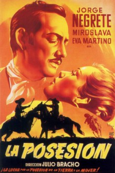

The Possession (1950)


AKA:La posesión (Título original)
País:México, 105 minutos.
Idiomas:Español
GénerosDrama
Director/es:Julio Bracho
Guionistas:María Luisa Algarra, Julio Bracho
Códec de vídeo:Unknown
Número: 3355
TomatoMeter:

--

--
Clasificación IMDb:


7.0/10 (31 votos)
Certificación:
Argumento:
Two old friends get hinky with each other over the deed to a tract of land, and their children's engagement gets broken over it.
Reparto
Jorge Negrete, Miroslava, Eva Martino, Domingo Soler, Gilberto González
Medio: Archivo de video,
Localización: D:\PELICULAS\ACTORES\Jorge Negrete\[ Jorge Negrete ] La Posesion\La Posesion_ Pelicula Mexicana de la epoca dorada.mp4
Prestado: No
Rel. aspecto: Unknown